Dia de ir embora de Montevidéu. Acordei e fui cedo para o café da manhã do hostel. Bem básico, só pão e manteiga ou coalhada, umas besteirinhas. Poderiam melhorar isso, afinal são 40 dólares de diária.
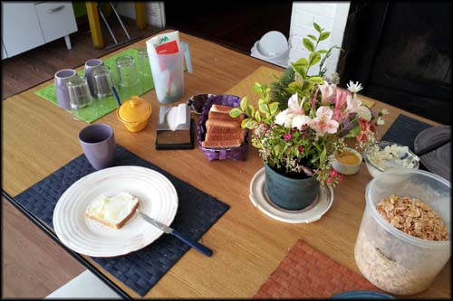Café da manhã do Punto Berro, simples ao extremo
A esta altura eu percebi que já estava um pouco de saco cheio para conhecer lugares novos. Já tinha visto tantas coisas até ali, passei por tantos lugares, conversei com tantas pessoas diferentes… aquele clima de “já deu o que tinha que dar”; vontade de subir na moto e rodar o máximo que conseguir por dia para chegar logo em casa...
Acho que é normal em qualquer viagem longa, seja de mochila nas costas e avião ou ônibus, ou de moto. Talvez de moto seja mais evidente, porque além do cansaço natural que se acumula a cada quilômetro rodado, quem passeia de moto sabe, é muito diferente de uma viagem de carro. Você consegue viver mais o espaço que te cerca, tem uma visão diferente das paisagens, do clima…só quem viaja de moto sabe. Ou seja, é muita informação nova pra assimilar.
Puxei um pouco mais de ânimo, bebi mais uma xícara de café, e estava determinado a continuar aproveitando ao máximo todo o percurso que eu ainda haveria de fazer até retornar para o Rio de Janeiro. Voltei ao quarto, arrumei toda a bagagem, tomei um banho, e me preparei para deixar Montevidéu.
Acertei as contas com o hostel, foram 80 dólares de duas noites, mais 100 pesos de cerveja. Enquanto eu amarrava a bagagem na moto, o casal de chilenos que eu conhecera na véspera também deixava a cidade, arrastando aquelas malas com rodinhas. Nos despedimos.
Antes de eu sair da garagem o suposto dono do hostel, aquele meio emburrado, ainda se aproximou e tentou me ajudar dizendo as 'rutas' que eu teria que pegar para continuar rodando pela costa uruguaia. Um pouco de simpatia de despedida, talvez.
Subitamente, lembrei que estava sem moedas uruguaias, precisava trocar dinheiro. E havia uma casa de câmbio bem em frente ao hostel. Atravessei a rua e troquei reais por pesos uruguaios. Não me lembro mais quanto troquei nem o câmbio, mas não foi muito, acho que uns 200 reais.
Finalmente saí com a moto, e decidi dar mais uma volta pelos lugares que tinha passado a pé na véspera, no centro da capital uruguaia. O trânsito estava mais movimentado, mas para uma segunda-feira, dia útil, um paraíso, sem aquele estresse de grandes cidades.
Abasteci em Montevidéu mesmo (3.877 Km rodados). Rodei e rodei pela cidade, e na hora de sair de fato e voltar à estrada, me enrolei. Quando vi que só no instinto não conseguiria achar a rota que tinha que pegar, apelei pro GPS no celular. Me achei, e peguei a estrada.
Peguei a Ruta Interbalnearia General Liber Seregni, no intuito de ir desviando para as pequenas cidades ao longo. Acabei não fazendo muito isso, preocupado com horário. Havia decidido que dormiria em Aguas Dulces, onde montaria minha base para conhecer o que havia perto.
Pessoal que viaja de mochilão costuma ficar uma noite em cada cidade naquele trecho, mas elas são muito próximas para ir de motocicleta. Então eu vi que poderia ficar em uma só cidade, e conhecer diversas outras sem precisar armar e desarmar bagagem, gastando um pouco mais de gasolina, entretanto, por causa do vai e vem no trajeto.
Segui, tentado a alterar a rota a cada placa que eu via indicando um balneário. Precisava de mais dias no Uruguai para conhecer tudo, mas haveria de ficar para outra vez. Segui direto até Pan de Azucar. Lá fiquei em dúvida entre visitar Piriápolis ou continuar direto até Punta del Este.
Parei para ver o mapa e esticar as pernas, e percebi que havia perdido a capa impermeável de um dos alforges. Que porcaria, voou na estrada e eu nem vi, me dei mal. Mas aquele dia não prometia chuva, então desencanei do prejuízo.
Decidi deixar Piriápolis para uma próxima aventura, e fui direto até Punta del Este. Entrei em Maldonado, e segui as placas indicando Punta del Este. Logo na entrada da cidade já me deparei com um visual bem bacana.
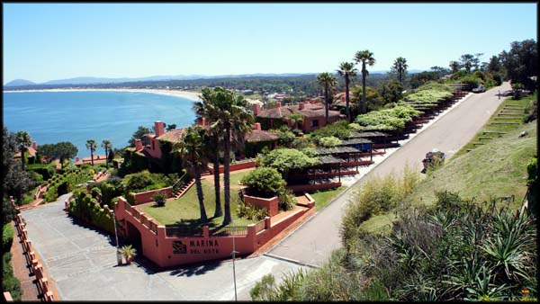Mirante no caminho de descida para Punta del Este
Punta del Este
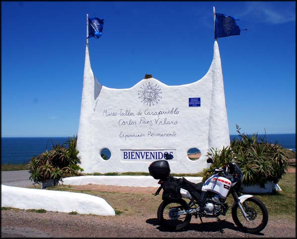Entrada do Museo-taller de Casapueblo
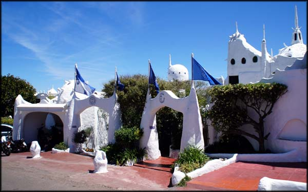Arquitetura bem louca, Vilaró
Parei para tirar fotos e conhecer a casa do artista plástico Carlos Paez Vilaró, que tem uma arquitetura bem louca e que é atração turística na região. Ele tem uma exposição permanente ali, mas resolvi não explorar o prédio por dentro.
Ainda longe do centro de Punta del Este, se podia ver os prédios à distância. Desci até um ponta de rochas para apreciar a vista. Alguns turistas, uma barraquinha com artesanato, casais fazendo picnic. Um clima bem bacana.
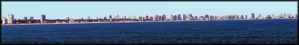A cidade vista de longe
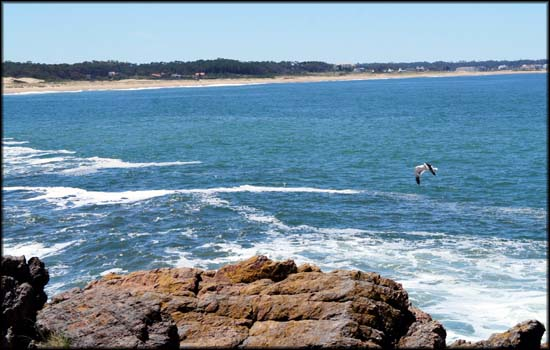Visual típico litorâneo
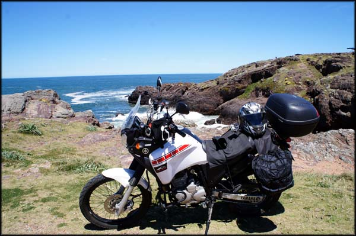O prazer de viajar de moto
Segui então para entrar na cidade. É perceptível mesmo que aquela é uma cidade diferente das demais no Uruguai. Mais cara, mais sofisticada, mais burguesa, tudo que eu tinha lido sobre Punta del Este eu percebia que era verdade. Não é a minha praia, lanchas, jet ski, cassinos… queria só conhecer mesmo, e não me aprofundar na vida local daquele lugar.
Tudo muito vazio, pouquíssimos carros nas ruas, restaurantes fechados. É, o país parece mesmo que fecha fora da época de temporada turística. Rodei um pouco por lá, as praias pareciam ser mais bonitas, agora com faixas de areia bem grandes, e pequenas dunas. Para quem curte praia deve ser legal passar um dia inteiro por lá.
Encontrei por acaso a famosa escultura “Los Dedos”, e parei para tirar minha foto clássica de turista. Impressionante, eu já iria embora sem lembrar desse ponto turístico, não houvesse passado em frente, por acaso mesmo, só iria lembrar quando estivesse no Brasil. Cabeça de vento.
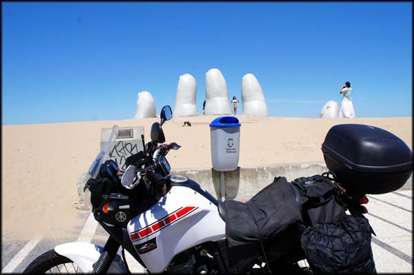Ponto turístico clássico
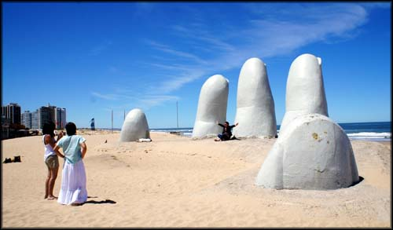Los Dedos em Punta del Este
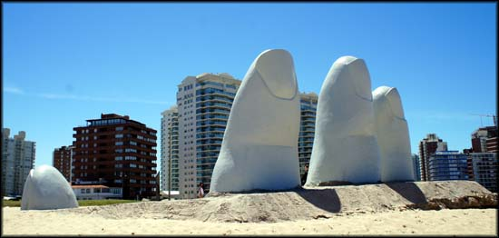Escultura na areia da praia, prédios ao fundo
Pedi a umas meninas que estavam lá fotografando para que também tirassem uma foto minha com a escultura ao fundo. Mas chegando em casa vi que ficou uma porcaria rs.
Rodei mais um pouco por lá, e comecei a sair de Punta del Este, e segui beirando a orla. Passei por La Barra, onde está a também famosa Ponte Ondulada, a qual quase perdi também. Já ia pegando outra estrada quando vi de relance essa ponte louca. Passei por ela algumas vezes, é divertido pilotar e deu vontade de fazer um saltos, mas me contive. Parei e tirei fotos.
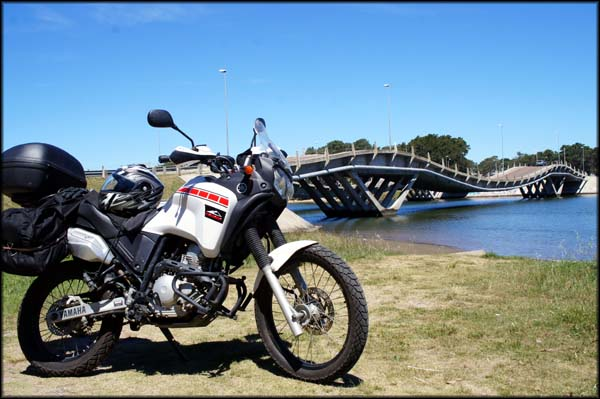A Ponte Ondulada, sobre o Rio Maldonado
E continuei, agora pela Ruta 10, passando por El Chorro, Balneario Bueno Aires, José Ignacio até chegar na Laguna Garzón. Ali a estrada era interrompida pela lagoa. Estava seguindo as placas, e não olhei mais no GPS do celular.
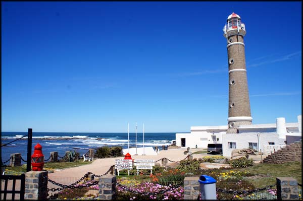Farol na orla de José Ignacio
Parei a moto lá na beira para aproveitar e descansar, e vi que havia uma balsa para fazer a travessia da faixa d'água, uns 500m apenas. Naquele momento ela estava vindo da outra margem trazendo um carro.
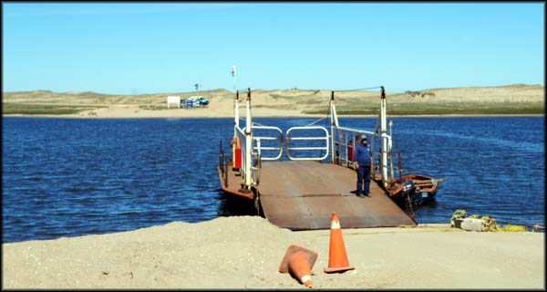Balsa para atravessar a Laguna Garzón
Fui me informar com o cara que trabalhava lá, e descobri que era gratuito a travessia. Ele me explicou que depois de atravessar, eu teria uns 30 Km de estrada de chão até chegar no asfalto de novo, mas que era uma estrada em boas condições. Então ele perguntou “hará que el cruce?” ou algo assim. Pensei rapidamente e disse que não, agradecendo a atenção. Não queria ir mais por estrada de chão, não neste momento, já tinha acabado minha cota de offroad.
Voltei uns 3km pelo asfalto até a primeira rotatória, por onde pude subir até a Ruta 9 em direção a Rocha. Chegando em Rocha desci pela Ruta 15 até Costa Azul, La Paloma, e La Pedrera, passeando um pouco por essas cidades e por suas praias. Todas essas pequenas cidades litorâneas nas quais entrei tinham pequenas praias. E em todas elas um farol.
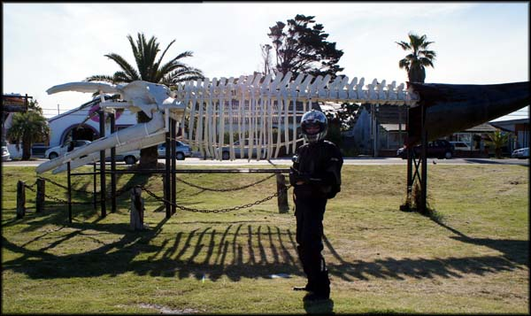Escultura com ossada de baleia, não lembro a cidade em que achei, foram muitas
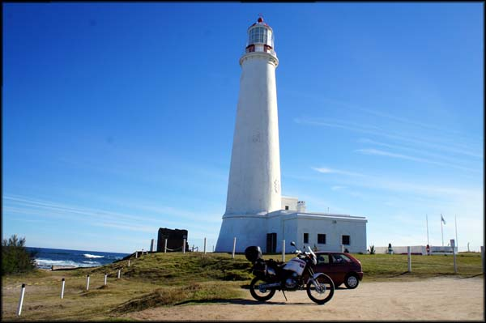Mais estruturas militares
Enquanto eu tirava algumas fotos, estranhei um cara que estava num carro vinho, e ficou olhando pra moto enquanto eu me afastei. Fiquei de olho. Mas ele só estava curioso com a moto.
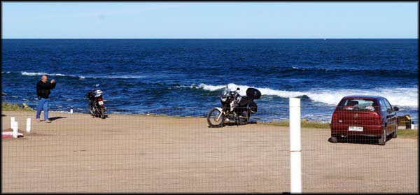A motoca gerando curiosidade, à época era desconhecida no Uruguai. Valeu uma foto.
Lá pelas 17:00h continuei pela Ruta 10, já iria começar a escurecer em poucas horas, e queria chegar em minha próxima cidade hospedeira com um pouco de luz natural pra tentar me perder menos.
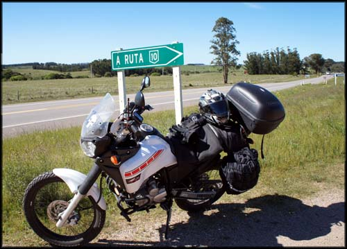Estrada, estrada, estrada
Segui pela ruta, que não está em boas condições, com diversos trechos sem asfalto, com muita terra na pista. Mas todos os perigos muito bem sinalizados, com placas indicando as falhas no pavimento. Foi um trecho demorado, porque não dava para puxar 100km/h com segurança, então mantive uma média de velocidade mais baixa. Já perto de escurecer, passei em frente à entrada do parque de Cabo Polonio e depois da cidade de Valizas, chegando finalmente em Aguas Dulces.
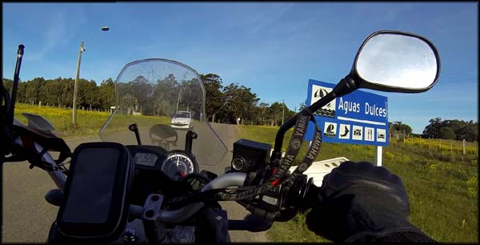Na estrada, rumo a Aguas Dulces
Pretendia visitar Cabo Polonio, e pesquisei na internet hotel em Valizas, mas não encontrei. Por isso nem parei para procurar, fui direto para a próxima cidade onde sabia que tinha uma pousada.
Aguas Dulces
Logo que entrei na minúscula cidade praiana de Aguas Dulces avistei em uma rua lateral a hospedagem que tinha visto na internet: a Terrazas de Aguas Dulces. Fui conhecer, e na verdade não era propriamente um hotel, mas sim pequenas suítes, como fossem apartamentos de veraneio, com cozinha equipada com fogão e geladeira para fazer a própria comida, lugar onde provavelmente na alta temporada os turistas ficam por uma semana curtindo a praia. 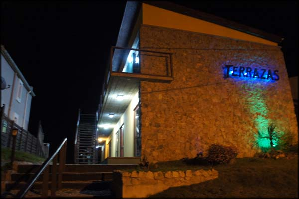Entrada do Terrazas, foto que tirei à noite
Achei bacana, limpo, e a na varanda que liga os quartos no segundo andar ainda tinha uma bela vista para o mar… decidi ficar, pelo preço de 700 pesos uruguaios. E ainda tinha a Lola, cachorrinha animada que fica por lá e faz a recepção dos hóspedes.
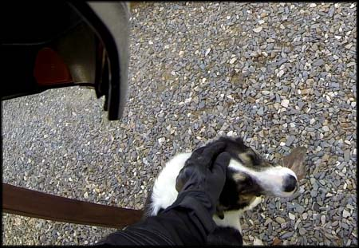Lola, a animadora da pousada
Perguntei ao Sr. Miguel, o proprietário, onde se poderia comer na cidade à noite, e ele confirmou minhas suspeitas: nada estaria aberto. Mas umas mulheres sempre vão à noite na cozinha principal do Terrazas e fazem uma janta para quem quiser, ao preço de 170 pesos. Que ótimo, não iria me preocupar em procurar em procurar janta. Mas queria comer algo logo, não havia almoçado, como de costume, e dessa vez estava com fome.
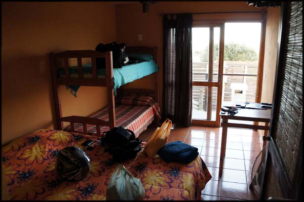No quarto, cama de casal e beliche, ideal para uma família que não procriou muito
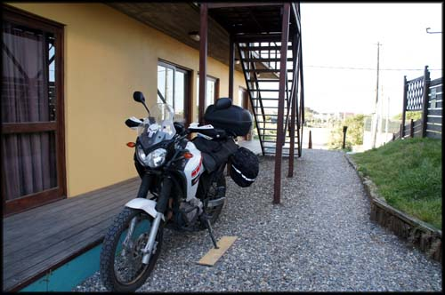Achei um lugar bacana pra motoca dormir
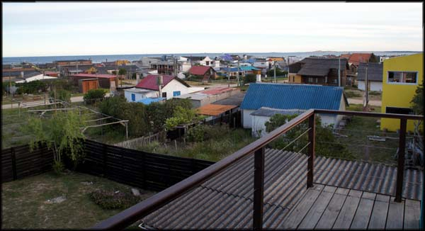Do corredor/varanda do quarto se tem uma bela vista
Depois de descarregar a moto, nem troquei de roupa, voltei pra rua e fui procurar alguma coisa que comer. A cidade é muito pequena mesmo, nem deu pra passar a terceira marcha na moto. A rua mais comercial, com restaurantes e armazéns, se resume a uns cinco quarteirões. Quase tudo fechado, obviamente.
O frio já chegava pesado com o vento do litoral e o por do sol. Avistei um mercadinho, parei em frente. No meu portunhol, agora avançado, me comuniquei com o vendedor, e comprei uma garrafa da boa cerveza Zillertal de 1l, um pacote de batatas fritas, e um pedaço de queijo feito na região, tudo por 220 pesos. Coloquei as tralhas no baú da moto e ainda dei uma passeada pela pequena orla, uma praia que deve bombar nos dias de temporada, mas nada diferente da natureza de outras praias uruguaias.
Voltei para o apartamento, coloquei a cerveza na geladeira, e fui “almoçar” meu queijo com batatas fritas industrializadas. Fiquei por lá, arrumando as coisas, fazendo backup de fotos e vídeos e bebericando a Zillertal.
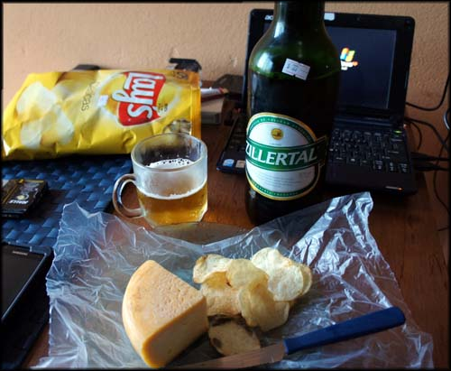Zillertal, boa cerveja. Queijo artesanal muito bom também. Batatas industrializadas.
Lá pelas 20:00 uma jovem senhora bateu à porta, perguntando se eu iria querer a janta, que seria um espaguete com molho vermelho e salsa. Depois de algum tempo eu consegui entender que era isso, ela falava muito rápido em espanhol. E disse que tentou aprender português, mas teve que parar as aulas. Aproveitei para pedir ajuda com a senha do WiFi, e descobri que eu tinha anotado com uma letra a menos, por isso não conseguia acessar.
Perguntei também pelos passeios em Cabo Polonio, e a senhora disse que era um lugar lindo, e que um casal de turistas da Alemanha que estavam hospedados lá iriam no dia seguinte também. Mas eles iriam até a cidade de Valizas e cruzariam para Cabo Polonio pelas dunas na praia, uma caminhada de cerca de 12Km. Deve ser legal, mas era um tempo que eu não queria usar nessa andança.
Enquanto esperava a janta, pesquisei o local onde eu queria ir no dia seguinte: Cabo Polonio. Teria que pilotar até a entrada do parque, por onde passei mais cedo, e lá comprar o passeio em caminhões 4x4.
E logo logo a senhora batia à porta novamente, trazendo uma generosa quentinha com o rango. Só consegui comer a metade, estava bom mas era muita coisa mesmo. Trouxe ainda uma latinha de cerveja, mas de uma marca mexicana. Coloquei na geladeira, e lá ela ficaria até o dia seguinte.
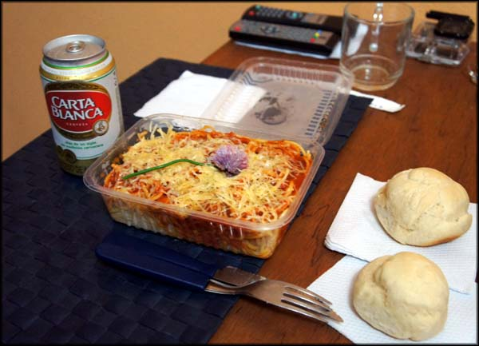Comida boa, macarronada. Pães artesanais. Cerveja não era uruguaia, mas sim mexicana.
Restou-me dormir e descansar para as aventuras do dia seguinte. Me enfiei no meio de todos os cobertores que encontrei, estava um frio de rachar. E apaguei.